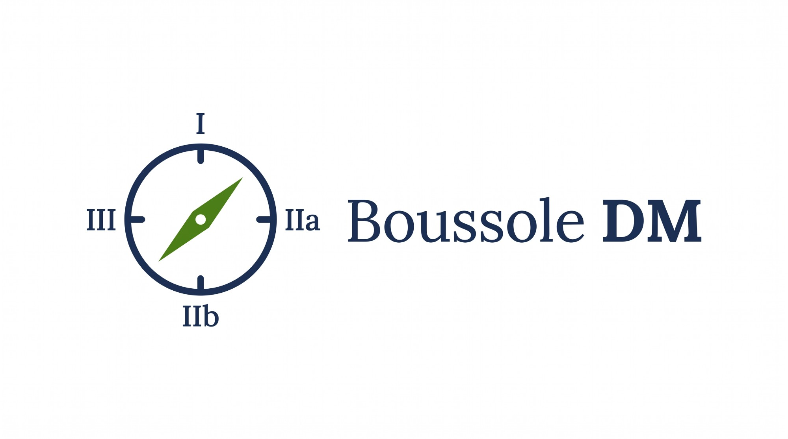
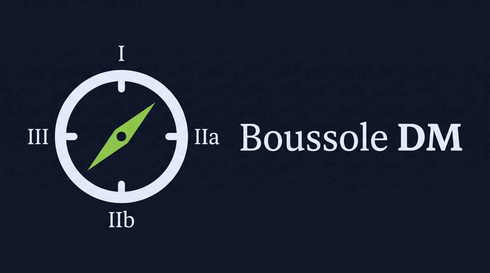

Outil pédagogique, sans valeur réglementaire


Qualifier, délimiter et classer un logiciel au regard du règlement (UE) 2017/745
Boussole DM a besoin de JavaScript pour fonctionner.
Chargement des règles…